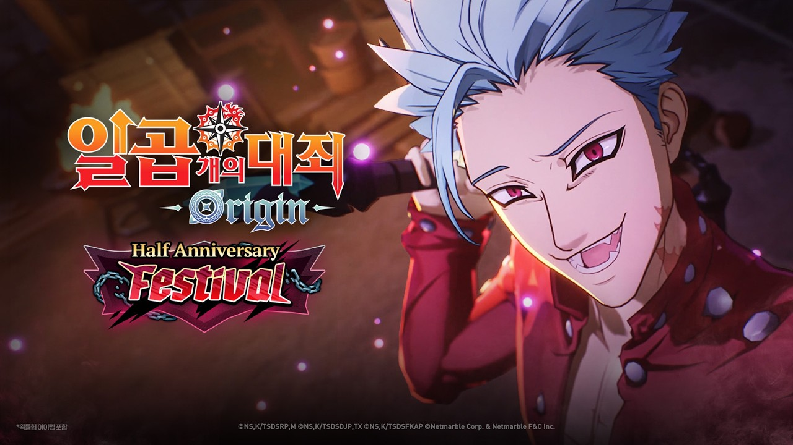
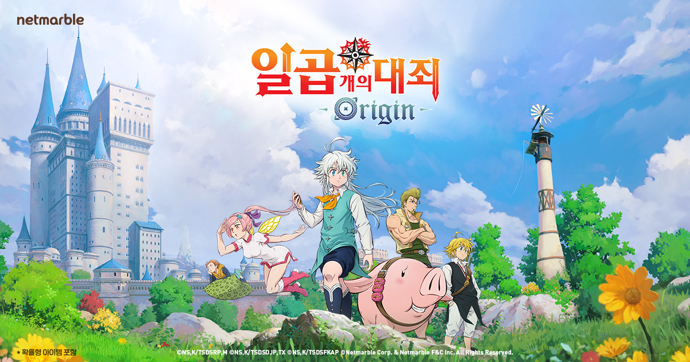

일곱개의대죄 오리진 0.5주년 업데이트 반 합류로 대죄단 7명 총출동
일곱 개의 대죄: Origin이 내일, 8월 26일부터 '0.5주년 페스티벌'을 엽니다. 서비스 반년을 기념하는 행사인데, 이번 업데이트에서 진짜 눈여겨볼 건 따로 있어요 — 신규 영웅 '반'이 합류하면서 게임 속 일곱 개의 대죄 단원이 드디어 전원 모인다는 겁니다.
저는 원작 만화·애니메이션 쪽을 재밌게 봤던 입장이라 이 소식이 유독 반갑더라고요. 일곱 개의 대죄는 멤버 각자가 '분노의 죄' '나태의 죄'처럼 하나씩 죄를 짊어진 설정으로 유명한 작품인데요, 스즈키 나카바 작가가 코단샤 소년 매거진에 2012년부터 2020년까지 연재했던 만화가 원작이고, 넷마블에프앤씨가 이걸 오픈월드 액션 RPG로 풀어낸 게 바로 이 게임이에요. 전에 멀린 합류 소식을 전했던 그 게임인데, 지난 3월 정식 출시했고 반년 만에 원작 멤버가 다 모이는 셈이라 이번 소식이 유독 특별하게 느껴지네요.
0.5주년 업데이트, 정확히 언제부터인가요?
0.5주년 페스티벌은 내일인 8월 26일부터 시작됩니다. 서비스 반년을 기념하는 행사라 회사도 공식적으로 '0.5주년'이라는 표현을 쓰고 있는데요, 정식 출시일이 매체마다 조금씩 다르게 나와 있어서 정확히 며칠 만인지는 저도 콕 집어 말씀은 못 드리지만, 지난 3월 출시했으니 대략 반년 맞습니다. 지난 8월 21일에는 한국·일본·글로벌 공식 유튜브 채널에서 0.5주년 페스티벌을 앞둔 사전 특별 방송도 이미 진행됐어요 — 놓치신 분들은 다시보기로 확인해보시면 좋을 것 같아요.

내일부터 열리는 0.5주년 페스티벌, 반의 표정부터 예사롭지 않죠.
이미지: 일곱 개의 대죄: Origin 공식 유튜브 '반 PV' 영상 썸네일
탐욕의 죄 '반', 드디어 대죄단 7명이 다 모여요
이번에 새로 합류하는 영웅은 탐욕의 죄를 짊어진 '반'이고, 반이 들어오면서 게임 속 일곱 개의 대죄 단원 7명이 전부 모이게 됩니다. 불사의 육체와 뛰어난 신체 능력을 가진 캐릭터답게, 원작 특유의 액션을 스타일리시하게 재현했다고 해요. 원작에서 반은 탐욕의 죄를 상징하는 '여우의 죄'로도 불리는데, 불사의 생명을 주는 샘물을 마신 뒤로 몸이 거의 다 날아가도 다시 재생하는 엄청난 맷집 캐릭터거든요. 왼쪽 허리에 새겨진 여우 낙인이 그 상징이고요.
사실 나머지 6명은 이미 게임 안에 다 구현돼 있었어요. 가장 최근엔 색욕의 죄 '고서'가 지난 7월 16일 업데이트로 합류했고, 이번에 반이 들어오면서 정말 마지막 퍼즐 조각이 맞춰지는 셈이죠. 정리하면 이렇습니다.
| 이름 | 상징하는 죄 |
|---|---|
| 멜리오다스 | 분노의 죄 |
| 디안느 | 질투의 죄 |
| 킹 | 나태의 죄 |
| 고서 | 색욕의 죄 |
| 멀린 | 폭식의 죄 |
| 에스카노르 | 오만의 죄 |
| 반 | 탐욕의 죄 |

공식 사이트에 걸린 대표 비주얼이에요. 이제 여기에 반까지 얹히면 진짜 완전체가 되는 거죠.
이미지: 일곱 개의 대죄: Origin 공식 사이트 대표 이미지
레이븐즈·액트17·미궁, 새 콘텐츠는 뭐가 오나요?
0.5주년 업데이트에서는 신규 지역 '레이븐즈'와 액트 17, 주간 로그라이크 콘텐츠 '미궁'이 한꺼번에 추가됩니다. 액트 17까지 열리면 그만큼 메인 스토리가 한 챕터 더 나아간다는 뜻이니, 스토리 진행 중이신 분들껜 특히 반가운 소식이겠네요. 정리하면 아래 네 가지예요.
- 신규 지역 '레이븐즈' + 액트 17 스토리가 새로 열립니다.
- 주간 콘텐츠 '미궁'이 로그라이크식으로 구성돼 매주 새로운 진행을 할 수 있습니다.
- 상위 성장 시스템 '초월 제련'이 추가됩니다.
- 최상위 난이도 '초월'이 개방됩니다.
초월 제련이랑 초월 난이도는 둘 다 어느 정도 장비·전투력을 갖춘 유저를 위한 상위 콘텐츠예요. 구체적인 강화 수치나 초월 난이도의 세부 조건은 아직 공식으로 자세히 안 풀려서🔍 게임 내 확인, 이 부분은 업데이트 적용 이후 다시 확인해보는 게 정확할 것 같아요. 그래도 엔드 콘텐츠가 새로 하나 생긴다는 것만으로도 오래 즐기신 분들껜 반가운 소식일 것 같네요.
미궁은 매주 도는 로그라이크 콘텐츠라니, 주간 숙제 하나가 더 늘어나는 셈이네요.
앙케이트 소환 투표, 어떻게 진행되나요?
앙케이트 소환 투표는 0.5주년 페스티벌 기간에 설문을 거쳐, 결과로 뽑힌 인기 영웅을 9월 16일 2부 업데이트에서 소환 라인업에 반영하는 방식이에요.
다만 정확한 투표 시작·종료일이랑 후보 명단은 아직 1차 공식 공지로 확인이 안 됐어요🔍 공식 공지 확인 필요. 헷갈리지 않으셔야 할 부분은 투표가 끝나는 시점이랑 실제로 소환할 수 있게 되는 시점(9월 16일)이 다르다는 거예요 — 투표는 페스티벌 기간에, 결과 반영은 2부 업데이트 때 이뤄지는 구조거든요. 정확한 일정이 뜨는 대로 다시 채워드릴게요.
| 구분 | 내용 |
|---|---|
| 진행 방식 | 0.5주년 페스티벌 기간 설문 → 인기 영웅 소환 라인업 반영 |
| 결과 반영 | 9월 16일 2부 업데이트 |
| 정확한 투표 일정·후보 | 공식 공지 확인 필요🔍 게임 내 확인 |
정확한 후보·일정은 공식 공지로 다시 확인하고 채워드릴게요.
내일까지 활성화해야 하는 '마음을 찾는 여정' 이벤트도 있어요
14일 출석부 이벤트 '마음을 찾는 여정'은 내일 8월 26일까지 활성화해야 참여할 수 있습니다. 활성화만 해두면 이후 14일 동안 순서대로 접속해 보상을 받는 구조인데요, 보상 구성이 꽤 알찹니다.
- 영웅 픽업 소환권
- 골드
- 주괴 선택 상자
- 큐브 열쇠 꾸러미
- 찬란한 각인의 인장
0.5주년 업데이트 적용일이랑 활성화 마감이 겹쳐 있어서 깜빡하고 지나치기 쉬운데, 오늘내일 사이에 게임 켜서 활성화 버튼만 눌러두시는 걸 추천드려요. 14일 동안 매일 하나씩 보상이 나오는 구조라, 하루라도 접속을 거르면 그날 몫은 그냥 넘어가 버리니 활성화 이후엔 매일 챙기시는 습관이 중요해요.
활성화 버튼 하나 눌러두는 게 전부예요, 놓치면 아쉬운 보상이니 미리 챙겨두세요.
자주 묻는 질문
Q. 앙케이트로 뽑힌 캐릭터는 언제부터 소환할 수 있나요?
실제로 소환할 수 있는 건 9월 16일 2부 업데이트부터예요. 투표 자체는 0.5주년 페스티벌 기간에 진행되는데, 정확한 시작·종료일은 공식 공지로 다시 확인해보시는 게 정확해요 — 투표 마감이랑 실제 소환 오픈 시점이 다르다는 것만 기억해두시면 됩니다.
Q. '마음을 찾는 여정' 이벤트, 오늘 놓치면 못 하나요?
이 이벤트는 8월 26일까지 활성화해야 14일짜리 출석 보상을 받을 수 있는 구조라, 그 전에 활성화만 미리 해두시면 안전해요. 활성화 이후 14일 동안 순서대로 접속하면서 보상을 챙기는 방식이고요.
일곱 개의 대죄 오리진 0.5주년 정리
정리하면, 내일 8월 26일부터 일곱 개의 대죄: Origin은 0.5주년 페스티벌과 함께 '반'이 합류해 대죄단 7명이 모두 모이고, 레이븐즈·미궁·초월 제련 같은 신규 콘텐츠도 같이 열립니다. 앙케이트 소환 투표(정확한 일정은 공식 공지 확인, 결과는 9월 16일 반영)랑 마음을 찾는 여정 이벤트(8/26 활성화 마감)까지 한꺼번에 챙기실 분들은 미리 일정 체크해두시면 좋을 것 같아요.